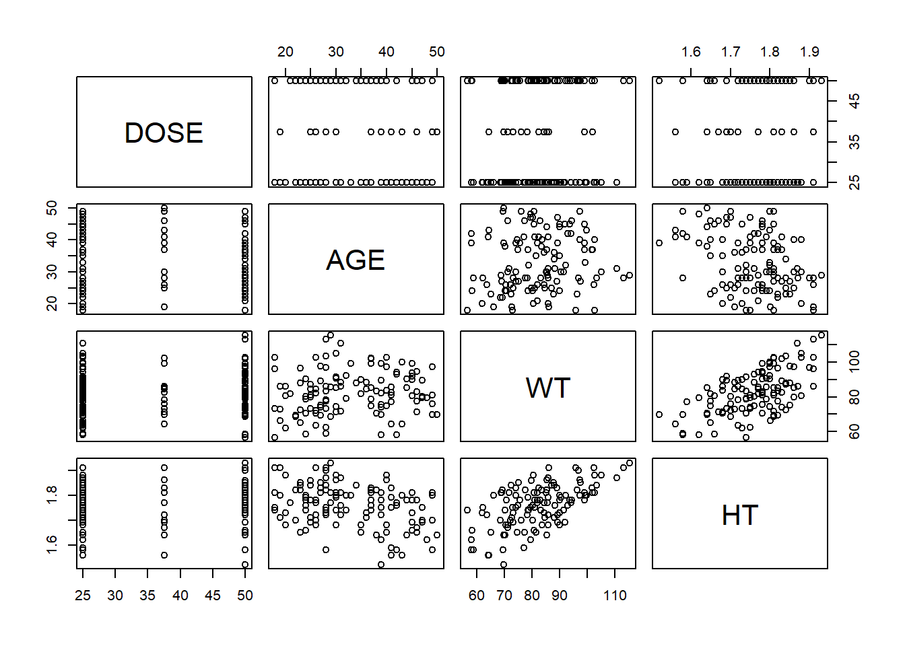
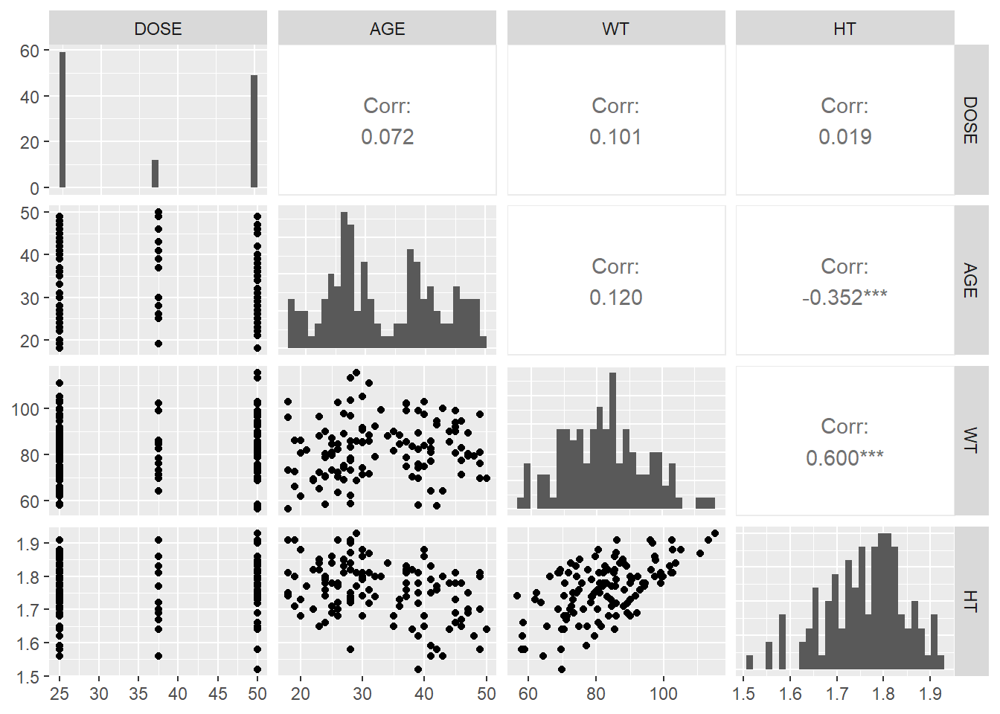
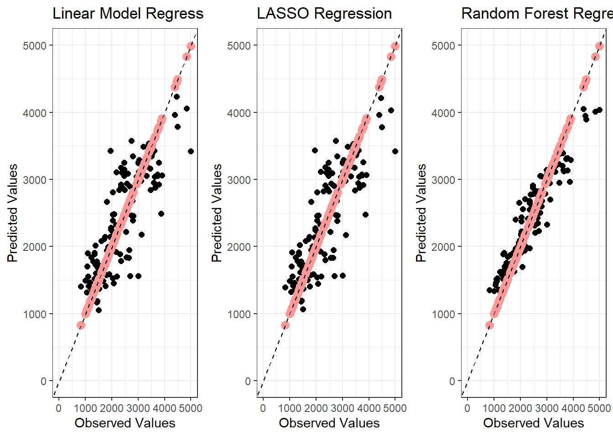
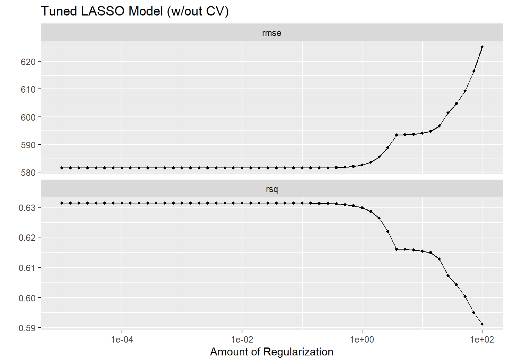
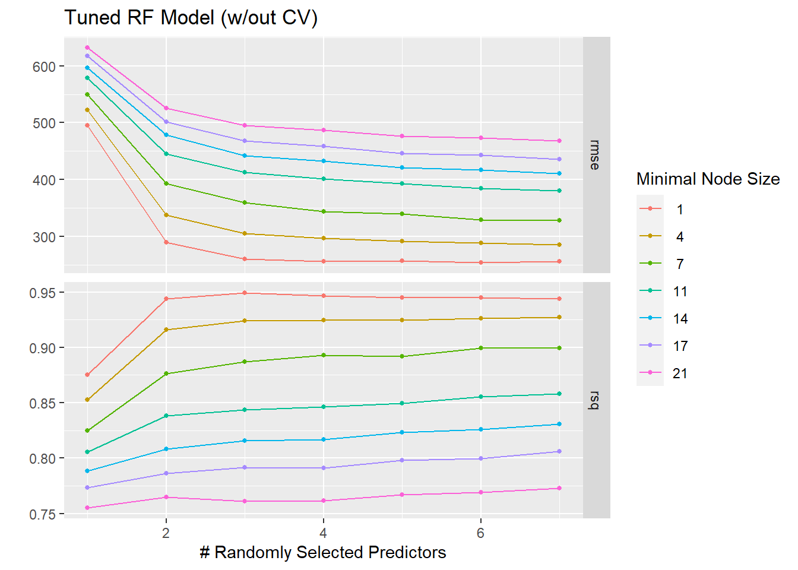
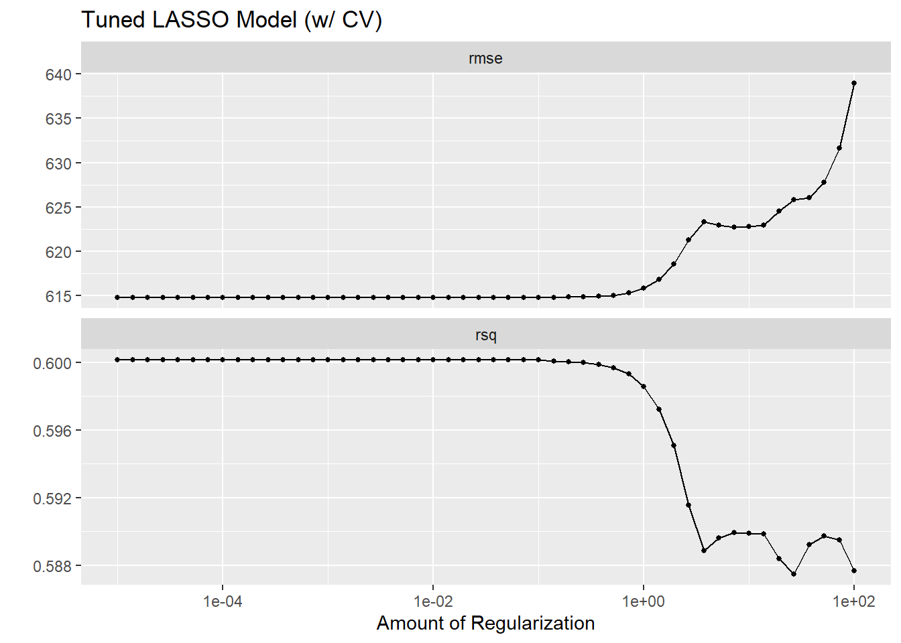
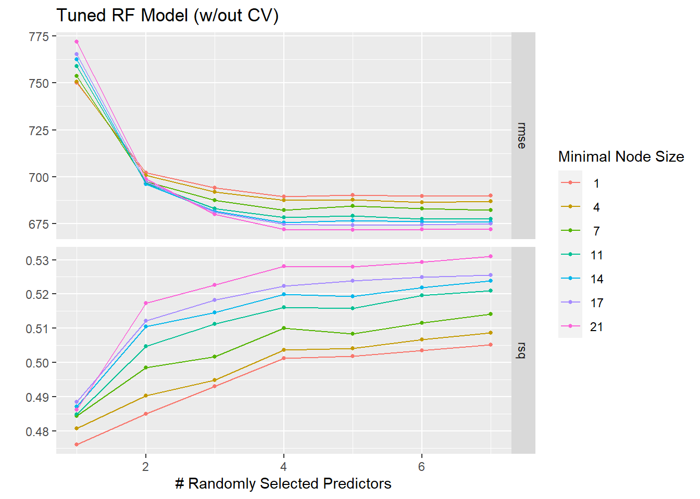

library(here) # to assist in creating a relative path
library(ggplot2) # to plot figures
library(tidymodels) # create model fits
library(dplyr) # miscellaneous data manipulation
library(tidyr) # Create tidy data
library(GGally) # made the correlation plot
library(glmnet) # help fits GLM
library(ranger) # implement Random Forests
library(yardstick) # compute metrics
library(cowplot) # organized the plots
library(gt) # Created a tableMachine Learning Model Exercise
Module 11: Machine Learning Model I
The follow exercise uses the data set procured in Module 8 to practice model fitting, performance assessment, and model tuning with machine learning.
Model Fitting
Loading Packages and Data
I start off with loading the libraries and data I will be using for this exercise. The data we are using is retrieved from Module 8’s exercise, and it has 120 observations and 7 variables. These variables include: Y (observation), DOSE, AGE, SEX, RACE, WT, and HT.
# Load RDS file
data <- readRDS(here("ml-models-exercise", "combined_data.rds"))Some Data Wrangling and Set-up
I first start with setting up a seed rng. This will show up several time throughout the exercise when sampling is occuring.
# Set seed for reproducibility
rng = 1234
set.seed(rng)Some more data manipulation is first implemented before any modeling occurs. We used the dplyr package to mutate any observation of “7” or “88” into “3” for simplicity sake.
# Mutate all occurence of '7' or '88' in RACE variable into '3'
data <-
data %>%
mutate(RACE = case_when(
RACE == "7" | RACE == "88" ~ "3",
TRUE ~ RACE
))A correlation coefficient is reflected in a numeric value ranging from -1 to 1. The following script is used to implement a pairwise correlation to observe any variables that may appear to be correlated and potentially redundant. The following reference was used to create the plot. When observing the plots, one can see an extremely high correlation coefficient between the height and weight variable.
Pairswise Correlation Reference
# Selecting continuous variables and assigning them to continuous_data
continuous_data <-
data %>%
select(DOSE, AGE, WT, HT)
# Changing DOSE variable into a continuous numeric variable
continuous_data$DOSE <- as.numeric(as.character(data$DOSE))
# Plot the pairwise plot
pairs(continuous_data)
# Create a matrix of scatterplots with correlation coefficients
ggpairs(
continuous_data,
upper = list(continuous = wrap("cor")),
lower = list(continuous = wrap("points")),
diag = list(continuous = wrap("barDiag"))
)
Considering the high correlation between the height and weight variable, we have decided to create a new variable dubbed BMI to reflect the two variable, as the two of them can reflect redundancy in the data. The following link was used to calculate for BMI.
When viewing the data set, the sample reflects an adult population (based on the AGE variable). Based on the numeric values of the data set, I can only assume that the height is more accurately represented in kilograms(kg) and the height variable is represented in meters (m). I decided to convert the following variables into imperial units to used the BMI formula shared above.
# I proceed to convert the height and weight variables into imperial units of lbs and inches, respectively.
data$WT <- data$WT*2.2046
data$HT <- data$HT*39.3701
# Now with the height and weight variables in imperial units, I can easily calculate and create a new variable BMI based on the formula provided from the reference shown above.
data$BMI <- (data$WT/ (data$HT)^2)*703Model Fitting and Performance
I used the following links to assist in writing the script below to create and fit the three models of interest. Model Reference
I first start with creating the recipe for the model(s). The same recipe will be used multiple time throughout the exercise. It factors Y as the outcome and the remaining variables as the predictor.
# Creating a recipe where the outcome is Y and the predictors are all of the other variables
model_recipe <- recipe(Y ~ ., data = data) I then set the model specification for the three models.
# Linear model with all predictors
linear_model <-
linear_reg() %>%
set_engine("lm") %>%
set_mode("regression")
# LASSO regression model
lasso_model <-
linear_reg(penalty = 0.1, mixture = 1) %>%
set_engine("glmnet") %>%
set_mode("regression")
# Random forest model
random_forest_model <-
rand_forest() %>%
set_engine("ranger", seed=rng) %>%
set_mode("regression")A workflow is set up with the model specification created above.
# Setting up workflow for the linear model
lm_workflow <-
workflow() %>%
add_model(linear_model) %>%
add_recipe(model_recipe)
# Setting up workflow for the LASSO regression Model
lasso_workflow <-
workflow() %>%
add_model(lasso_model) %>%
add_recipe(model_recipe)
# Setting up workflow for the Random Forest regression Model
rf_workflow <-
workflow() %>%
add_model(random_forest_model) %>%
add_recipe(model_recipe)I then fit the models, as shown below.
# When attempting to fit LASSO model, an error occur regarding the variable type
# Convert all non-numeric variables to numeric
data <- sapply(data, as.numeric, na.rm = TRUE)
# Linear model fitting
lm_fitting <- fit(lm_workflow, data)
# LASSO Model fitting
lasso_fitting <- fit(lasso_workflow, data)
# Random Forest Fitting
rf_fitting <- fit(rf_workflow, data)I then create a prediction for each of the fits.
# Extract the fitted linear model
fit1 <- extract_fit_parsnip(lm_fitting)
# Make predictions for the linear model and combine it to the original data
lm_prediction <-
predict(fit1, new_data = data) %>%
bind_cols(data)
# Extract the lasso regression fit
fit2 <- extract_fit_parsnip(lasso_fitting)
# Make predictions for the LASSO regression model and combine it to the original data
lasso_prediction <-
predict(fit2, new_data = data) %>%
bind_cols(data)
# Extract the random forest fit
fit3 <- extract_fit_parsnip(rf_fitting)
# Make predictions for the random forest model and combine it to the original data
rf_prediction <-
predict(fit3, new_data = data) %>%
bind_cols(data)The predictions are then used to assess the performance of the models. RMSE is used as the assessment variable.
# Calculate RMSE for each model
lm_rmse <- metrics(lm_prediction, truth = Y, estimate = .pred) %>%
filter(.metric == "rmse") %>%
mutate(model = "Linear Model")
lasso_rmse <- metrics(lasso_prediction, truth = Y, estimate = .pred) %>%
filter(.metric == "rmse") %>%
mutate(model = "LASSO Regression")
rf_rmse <- metrics(rf_prediction, truth = Y, estimate = .pred) %>%
filter(.metric == "rmse") %>%
mutate(model = "Random Forest")
# Combine results into a single data frame
all_rmse <- bind_rows(lm_rmse, lasso_rmse, rf_rmse) %>%
mutate(
Metric = .metric,
RMSE = .estimate,
Model = model
) %>%
select(Model, RMSE)
# View the combined results
gt(all_rmse) | Model | RMSE |
|---|---|
| Linear Model | 581.4177 |
| LASSO Regression | 581.4665 |
| Random Forest | 361.6420 |
From the model performance, we can see that the Linear model and the LASSO model were both fairy similar in performance, but the Random Forest proved to be an outlier with a RMSE of 362. Thus, the Random Forest regression model proved to have performed the best thus far.
We then continue to plot the observed vs predicted variables to visualize these performances.
# Plotting the observed vs the predicted values
lm_plot <- ggplot(lm_prediction,
aes(x = Y, y = .pred)) +
geom_point(aes(y = .pred), color = "black", size= 2) +
geom_point(aes(y = Y), color = "#ff9896", size= 3)+
geom_abline(intercept = 0, slope = 1, linetype = "dashed") +
labs(x = "Observed Values", y = "Predicted Values", color = "Model", shape = "Model") +
xlim(0, 5000) +
ylim(0, 5000)+
ggtitle("Linear Model Regression")+
theme_bw()
lasso_plot <- ggplot(lasso_prediction,
aes(x = Y, y = .pred)) +
geom_point(aes(y = .pred), color = "black", size= 2) +
geom_point(aes(y = Y), color = "#ff9896", size= 3)+
geom_abline(intercept = 0, slope = 1, linetype = "dashed") +
labs(x = "Observed Values", y = "Predicted Values", color = "Model", shape = "Model") +
xlim(0, 5000) +
ylim(0, 5000)+
ggtitle("LASSO Regression")+
theme_bw()
rf_plot <- ggplot(rf_prediction,
aes(x = Y, y = .pred)) +
geom_point(aes(y = .pred), color = "black", size= 2) +
geom_point(aes(y = Y), color = "#ff9896", size= 3)+
geom_abline(intercept = 0, slope = 1, linetype = "dashed") +
labs(x = "Observed Values", y = "Predicted Values", color = "Model", shape = "Model") +
xlim(0, 5000) +
ylim(0, 5000)+
ggtitle("Random Forest Regression")+
theme_bw()
# Arrange the plots next to each other
combined_plots <- plot_grid(lm_plot, lasso_plot, rf_plot, nrow = 1)
# View the combined plots
combined_plots
Although, all of the models appear to have performed fairly well, it becomes apparent that the Random Forest regression model performs the best. With the predicted values showing in the black data points, we can see that the Random Forest model’s prediction are most closely aligned with the observed values.
Model Tuning
We then proceed to tune the LASSO and Random Forest models, but we are doing so without cross-validation first.
Lasso Regression Model
The following reference was used to assist in writing the following script.
# Define a grid of parameters to tune over that from 1E-5 to 1E2 with 50 values
lasso_grid <- tibble(penalty = 10^seq(-5, 2, length.out = 50))
# I seem to have an error whenever I attempt to use grid_regular, so I searched for an alternate option for this case
# LASSO model specification
lasso_model_tuned <-
linear_reg(penalty = tune(), mixture = 1) %>%
set_engine("glmnet") %>%
set_mode("regression")
# LASSO Workflow
lasso_workflow_tuned <-
workflow() %>%
add_model(lasso_model_tuned) %>%
add_recipe(model_recipe)
# Set up the grid for tuning
lasso_tuned <-
lasso_workflow_tuned %>%
tune_grid(
resamples = apparent(data),
grid = lasso_grid
)
# Use autoplot to visualize tuning diagnostics
tunedlasso_wo_cv <- autoplot(lasso_tuned)
tunedlasso_wo_cv + ggtitle("Tuned LASSO Model (w/out CV)")
LASSO Behavior Explanation :
LASSO Regression and the applied penalty imposes a constraint on the absolute size of the coefficient. When the penalty parameters are low, the regularization effect is weak.
The LASSO plot shows higher regularization is correlating with higher RMSE, indicating lagging performance. This also reflects the model becomes simpler. he RMSE does not go lower than the value found from the linear model because LASSO aims to balance bias and variance, preventing overfitting while maintaining model simplicity.
Random Forest Regression Model
Model tuning is then performed on the Random Foreset Regression model. This is performed without cross validation as well.
# Repeating the same process with the Random Forest model
# Setting up a tuning grid
rf_grid <- grid_regular(
mtry(range = c(1, 7)),
min_n(range = c(1, 21)),
levels = 7)
# Setting up the random forest model with tuned parameters
random_forest_model_tuned <-
rand_forest(mtry = tune(), min_n = tune(), trees = 300) %>%
set_engine("ranger", seed=rng) %>%
set_mode("regression")
# Random Forest workflow now tuned
rf_workflow_tuned <-
workflow() %>%
add_model(random_forest_model_tuned) %>%
add_recipe(model_recipe)
# Set up the grid for tuning
rf_tuned <-
rf_workflow_tuned %>%
tune_grid(
resamples = apparent(data),
grid = rf_grid
)
# Use autoplot to visualize tuning diagnostics
rf_tuned_plot_wo_cv <- autoplot(rf_tuned)
rf_tuned_plot_wo_cv + ggtitle("Tuned RF Model (w/out CV)")
From the plot, we can see that the RMSE decreases with the number of randomly selected predictors (mtry) increases. The color coded aspect shows that the greater node sizes (min_n) also correlates with increasing RMSE and vice versa.
Model Tuning with Cross Validation
The previous two model tuning is replicated with 5-fold cross validation test repeated 5 times. This is performed with vfold_cv() function in the resamples.
# Re-set the seed
set.seed(rng)
# Tuning with CV
lasso_tuned_cv <-
lasso_workflow_tuned %>%
tune_grid(
resamples = vfold_cv(data, v = 5, repeats = 5),
grid = lasso_grid
)
# Use autoplot to visualize tuning diagnostics
tunedlasso <- autoplot(lasso_tuned_cv)
tunedlasso + ggtitle("Tuned LASSO Model (w/ CV)")
The newly formed LASSO model plot tuned with cross-validation shows that (similar to the previous LASSO) the model performs best with lower penalty values (as indicated by the resulting RMSE values).
The model tuning is replicated with cross validation for the random forest regression model, as well. No other parameters has been changed.
# Re-set the seed
set.seed(rng)
# Set up the grid for tuning
rf_tuned_cv <-
rf_workflow_tuned %>%
tune_grid(
resamples = vfold_cv(data, v = 5, repeats = 5),
grid = rf_grid
)
# Use autoplot to visualize tuning diagnostics
rf_tuned_plot <- autoplot(rf_tuned_cv)
rf_tuned_plot + ggtitle("Tuned RF Model (w/out CV)")
From the plot, we can see that the best performance are shown with higher values of randomly selected predictors(mtry) and larger node size(min_n). This differs from the previous Random Forest model, as the best performance was reflected with the smallest node size. This difference can be shown in the plot at mtry=2, where the switch up occurs.
Conclusion
When initially comparing the LASSO Regression Model and the Random Forest model, the Random Forest Model far outstripped the LASSO model in terms of performance.
When we applied tuning to the LASSO model, we can see that the model performed well with lower penalty, and too much regularization led to overfitting. When the tuning was applied to the random forest model, the number of randomly selected predictors increasing led to RMSE decreasing.
When we applied cross validation, we can see in the plots that the lowest RMSE values were significantly larger than its model(s) counterpart without cross validation.
Overall, the LASSO model proves to have performed the best between the two model when observing the models after it is tuned and after cross validation is added to the tuning both.